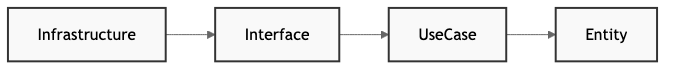

自分は Go の初学者なのですがクリーンアーキテクチャを学ぶために幾つかの書籍を読んでみたもののなかなかしっくりと理解が出来ていない状態でした。 そこで AI に極力シンプルなコードを書かせて理解するという事をやってみたのですが、なかなかいい感じに理解が進んだのでここで記事にしたいと思っています。
クリーンアーキテクチャとは？
クリーンアーキテクチャは、Robert C. Martin によって提唱されたソフトウェア設計原則です。最も重要な特徴は依存関係の方向性にあります。

従来のアーキテクチャとは異なり、内側の層は外側の層を知らないという原則に基づいています。これにより以下のメリットが得られます：
- テスタビリティ: ビジネスロジックを単体でテスト可能
- 柔軟性: データベースやWebフレームワークの変更が容易
- 保守性: 関心の分離により変更の影響範囲を限定
実装するシステムの全体像
今回実装するのは、RESTful APIを提供するユーザー管理システムです。
AI に書かせたコードは下記のレポジトリにあります。 https://github.com/jedipunkz/go-clean-architecture-playground

システムは以下の4つの層で構成されています：
- Entity Layer（エンティティ層） - ビジネスの核となるルール
- Use Case Layer（ユースケース層） - アプリケーション固有のビジネスロジック
- Interface Layer（インターフェース層） - 外部との入出力
- Infrastructure Layer（インフラストラクチャ層） - 外部システムとの実装
各層の詳細実装
1. Entity Layer - ビジネスルールの中核
最も内側の層から実装を始めます。エンティティ層は他のどの層にも依存しない純粋なビジネスロジックです。
// entity/user.go
package entity
import (
"errors"
"time"
)
type User struct {
ID int `json:"id"`
Name string `json:"name"`
Email string `json:"email"`
CreatedAt time.Time `json:"created_at"`
UpdatedAt time.Time `json:"updated_at"`
}
func NewUser(name, email string) (*User, error) {
if name == "" {
return nil, errors.New("名前は必須です")
}
if email == "" {
return nil, errors.New("メールアドレスは必須です")
}
now := time.Now()
return &User{
Name: name,
Email: email,
CreatedAt: now,
UpdatedAt: now,
}, nil
}
func (u *User) UpdateInfo(name, email string) error {
if name == "" {
return errors.New("名前は必須です")
}
if email == "" {
return nil, errors.New("メールアドレスは必須です")
}
u.Name = name
u.Email = email
u.UpdatedAt = time.Now()
return nil
}
この User エンティティは、クリーンアーキテクチャの最も内側に位置する部分です。ここで重要なのは、このエンティティが外部の何にも依存していないことです。データベースがMySQLなのかPostgreSQLなのか、WebフレームワークがGinなのかEchoなのか、そういった技術的な詳細は一切知らないのが特徴になっています。
NewUser 関数では、ユーザーを作成する際の基本的なビジネスルール（名前とメールアドレスは必須）を実装しています。これらのルールは、技術的な実装に関係なく、ビジネスとして絶対に守らなければならない制約です。また、UpdateInfo メソッドでは、ユーザー情報を更新する際の整合性を保っています。このようにエンティティ層では純粋なビジネスロジックのみを扱うことで、システムの核となる部分を技術的な変更から守ることができます。
2. Interface Layer - 抽象化による疎結合
次に、データアクセスのインターフェースを定義します。これが依存関係逆転の原則の鍵となります。
// interface/repository/user_repository.go
package repository
import "go-clean-architecture-playground/entity"
type UserRepository interface {
Create(user *entity.User) error
GetByID(id int) (*entity.User, error)
GetByEmail(email string) (*entity.User, error)
Update(user *entity.User) error
Delete(id int) error
List() ([]*entity.User, error)
}
この UserRepository インターフェースは、クリーンアーキテクチャにおける「Contract」の役割を果たしています。このインターフェースを見ると、ユーザーデータに対してどのような操作ができるのかが定義されています。重要なのは、これが「何をするか」だけを定義してて「どうやってするか」については一切触れていないということです。
従来のアーキテクチャでは、ビジネスロジックがデータベースの実装に直接依存していました。クリーンアーキテクチャでは、このインターフェースを間に挟むことで依存関係を逆転させてます。つまり、ビジネスロジック（UseCase）はこのインターフェースに依存し、具体的な実装（MemoryUserRepository）がこのインターフェースに合わせて作られます。これにより、データベースをMySQLからPostgreSQLに変更したり、テスト時にモックオブジェクトに置き換えたりすることが、他の層に影響を与えることなく可能になる、ということです。
3. Use Case Layer - ビジネスロジックのオーケストレーション
Use Case 層では、Entity と repository を組み合わせてアプリケーション固有のビジネスロジックを実装します。
// usecase/user_usecase.go
package usecase
import (
"errors"
"go-clean-architecture-playground/entity"
"go-clean-architecture-playground/interface/repository"
)
type UserUsecase struct {
userRepo repository.UserRepository
}
func NewUserUsecase(userRepo repository.UserRepository) *UserUsecase {
return &UserUsecase{
userRepo: userRepo,
}
}
func (u *UserUsecase) CreateUser(name, email string) (*entity.User, error) {
// ビジネスルール：重複チェック
existingUser, _ := u.userRepo.GetByEmail(email)
if existingUser != nil {
return nil, errors.New("このメールアドレスは既に使用されています")
}
// エンティティ作成（バリデーション付き）
user, err := entity.NewUser(name, email)
if err != nil {
return nil, err
}
// データ永続化
err = u.userRepo.Create(user)
if err != nil {
return nil, err
}
return user, nil
}
func (u *UserUsecase) GetUser(id int) (*entity.User, error) {
if id <= 0 {
return nil, errors.New("無効なユーザーIDです")
}
user, err := u.userRepo.GetByID(id)
if err != nil {
return nil, err
}
if user == nil {
return nil, errors.New("ユーザーが見つかりません")
}
return user, nil
}
Use Case 層は、クリーンアーキテクチャのオーケストレータのような役割を果たします。この UserUsecase では、Entity が持つ基本的なビジネスルールと、 リポジトリが提供するデータアクセス機能を組み合わせて、より複雑なビジネス要件を実現しています。
例えば CreateUser メソッドでは同じメールアドレスのユーザーが既に存在するかをリポジトリに問い合わせます。これはアプリケーション固有のビジネスルール（重複禁止）です。次に、Entity の NewUser 関数を使って新しいユーザーを作成します。ここでは Entity が持つ基本的なバリデーション（必須項目チェック）が実行されます。最後に、Repository を使って実際にデータを保存します。
この流れで重要なのは、Use Case 層が Entity とリポジトリインターフェースにのみ依存していることです。具体的なデータベース実装やHTTPハンドラーについては何も知りません。これにより、ビジネスロジックを外部の技術的な変更から完全に分離できています。
4. Infrastructure Layer - 外部システムとの実装
実際のデータ保存を担当する層です。今回はシンプルにメモリ内保存を実装しています。
// infrastructure/persistence/memory_user_repository.go
package persistence
import (
"errors"
"go-clean-architecture-playground/entity"
"go-clean-architecture-playground/interface/repository"
"sync"
)
type MemoryUserRepository struct {
users map[int]*entity.User
lastID int
mutex sync.RWMutex
}
func NewMemoryUserRepository() repository.UserRepository {
return &MemoryUserRepository{
users: make(map[int]*entity.User),
lastID: 0,
}
}
func (r *MemoryUserRepository) Create(user *entity.User) error {
r.mutex.Lock()
defer r.mutex.Unlock()
r.lastID++
user.ID = r.lastID
r.users[user.ID] = user
return nil
}
func (r *MemoryUserRepository) GetByEmail(email string) (*entity.User, error) {
r.mutex.RLock()
defer r.mutex.RUnlock()
for _, user := range r.users {
if user.Email == email {
return user, nil
}
}
return nil, nil // 見つからない場合はnil
}
インフラストラクチャ層は、クリーンアーキテクチャにおける実行者とも言えると思います。この MemoryUserRepository は、先ほど定義した UserRepository インターフェースを実際に実装したもので、この実装が先に定義されたインターフェースに合わせて作られていることです。
従来のアーキテクチャでは、まずデータベース実装があり、それに合わせてビジネスロジックが書かれていました。クリーンアーキテクチャでは、ビジネス要件から生まれたインターフェースに対して、技術的な実装が合わせられます。これが「依存関係逆転の原則」の実践です。
この実装では、シンプルにメモリ内のマップを使ってデータを保存していますが、同じインターフェースを実装することで、PostgreSQL や MySQL などのデータベース実装に置き換えることができます。その際、Use Case 層や Entity 層のコードは一切変更する必要がありません。
5. Controller Layer - HTTP APIの提供
外部からのHTTPリクエストを処理し、ユースケースに処理を委譲します。
// interface/controller/user_controller.go
package controller
import (
"encoding/json"
"go-clean-architecture-playground/usecase"
"net/http"
"strconv"
"strings"
)
type UserController struct {
userUsecase *usecase.UserUsecase
}
func NewUserController(userUsecase *usecase.UserUsecase) *UserController {
return &UserController{
userUsecase: userUsecase,
}
}
type CreateUserRequest struct {
Name string `json:"name"`
Email string `json:"email"`
}
func (c *UserController) CreateUser(w http.ResponseWriter, r *http.Request) {
if r.Method != http.MethodPost {
http.Error(w, "Method not allowed", http.StatusMethodNotAllowed)
return
}
var req CreateUserRequest
if err := json.NewDecoder(r.Body).Decode(&req); err != nil {
http.Error(w, "Invalid JSON", http.StatusBadRequest)
return
}
user, err := c.userUsecase.CreateUser(req.Name, req.Email)
if err != nil {
http.Error(w, err.Error(), http.StatusBadRequest)
return
}
w.Header().Set("Content-Type", "application/json")
json.NewEncoder(w).Encode(user)
}
コントローラー層は、外部とアプリケーションを繋ぐのモノの役割を果たします。この UserController は、HTTP という外部のプロトコルから送られてくるリクエストをアプリケーション内部で理解できる Go 言語の関数呼び出しに変換しています。
CreateUser メソッドを見てみるとまず HTTP リクエストから JSON データを読み取り、Go 言語の構造体 CreateUserRequest に変換しています。次に、その構造体から名前とメールアドレスを取り出して、Use Case 層の CreateUser メソッドを呼び出します。最後に、Use Case から返された結果を JSON に変換して HTTP レスポンスとして返します。
重要なのは、このコントローラーが HTTP リクエストの読み取り、ステータスコードの設定、レスポンスの書き込みのみを担当し、ビジネスロジックには一切関与していないことです。実際のユーザー作成処理は全て Use Case 層に委譲しています。これにより、将来的に HTTP から gRPC や GraphQL に変更する必要が出てきてもビジネスロジックは何も変更する必要がなくなります。
依存性注入 - 全体を結合する
cmd/main.go では、各層のインスタンスを作成し、依存関係を記しています。
// cmd/main.go
func main() {
// 依存関係の構築（外側から内側へ）
userRepo := persistence.NewMemoryUserRepository() // Infrastructure
userUsecase := usecase.NewUserUsecase(userRepo) // Use Case
userController := controller.NewUserController(userUsecase) // Interface
// HTTPハンドラーの設定
http.HandleFunc("/users", func(w http.ResponseWriter, r *http.Request) {
if r.Method == http.MethodPost {
userController.CreateUser(w, r)
} else if r.Method == http.MethodGet {
userController.ListUsers(w, r)
}
})
fmt.Println("サーバーを :8080 で起動しています...")
log.Fatal(http.ListenAndServe(":8080", nil))
}
ここで最も重要なのが依存性の部分です。cmd/main.go は、クリーンアーキテクチャの各要素の役割の関係を表現しています。
依存関係の構築順序を見るとまず最も外側のインフラストラクチャ層（MemoryUserRepository）のインスタンスを作成して、それを Use Case 層（UserUsecase）に渡しています。次に Use Case を Controller 層（UserController）に渡します。
この設計は、例えばデータベースをメモリから PostgreSQL に変更したい場合、cmd/main.go の一行を変更するだけで済みます。ビジネスロジックや Controller のコードは変更する必要がありません。
実際に動かしてみよう
1. アプリケーションの起動
# ビルドして実行
go build -o bin/server cmd/main.go
./bin/server
# または直接実行
go run cmd/main.go
2. APIのテスト
# ユーザー作成
curl -X POST http://localhost:8080/users \
-H "Content-Type: application/json" \
-d '{"name": "田中太郎", "email": "tanaka@example.com"}'
# レスポンス例
{
"id": 1,
"name": "田中太郎",
"email": "tanaka@example.com",
"created_at": "2025-08-01T19:52:11Z",
"updated_at": "2025-08-01T19:52:11Z"
}
# ユーザー取得
curl http://localhost:8080/users/1
{
"id": 1,
"name": "田中太郎",
"email": "tanaka@example.com",
"created_at": "2025-08-01T19:59:11.510652+09:00",
"updated_at": "2025-08-01T19:59:11.510652+09:00"
}
その他クリーンアーキテクチャのメリット
テスタビリティの向上
各層が独立しているため、ユニットテストが容易になるそうです。
// usecase のテスト例
func TestUserUsecase_CreateUser(t *testing.T) {
// モックリポジトリを注入
mockRepo := &MockUserRepository{}
usecase := NewUserUsecase(mockRepo)
// テスト実行
user, err := usecase.CreateUser("テスト太郎", "test@example.com")
// 検証
assert.NoError(t, err)
assert.Equal(t, "テスト太郎", user.Name)
}
拡張性の確保
前述しましたが、新しい要件に対して対応が簡単になります。
// PostgreSQL実装への切り替え
func main() {
// メモリ実装から...
// userRepo := persistence.NewMemoryUserRepository()
// データベース実装へ
userRepo := persistence.NewPostgreSQLUserRepository(db)
// 他の部分は変更不要！
userUsecase := usecase.NewUserUsecase(userRepo)
// ...
}
考察
クリーンアーキテクチャを実践することで、依存関係が従来と逆になったことが理解でき、これによってビジネス要件の不意の変更にも柔軟に対応出来そうということがわかりました。ただ小さいアプリケーションを書く際にはオーバーエンジニアリングなのでは？と感じたのも正直なところです。アプリケーションが複雑化するビジネス要件では真価を発揮できそうです。テストを書きやすいという点も個人的に納得。フロントエンジニアは Controller、バックエンドエンジニアは Use Case, インフラエンジニアは Repository と関心事を分離出来ている点も個人的にメリットと感じ取りました。